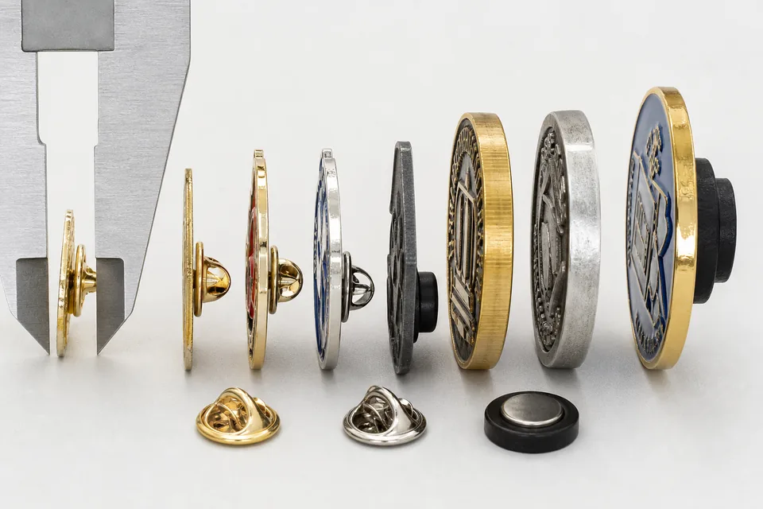

A custom metal badge is a small object, but a few millimeters can change how it looks, feels and performs. A 20 mm lapel pin is discreet and light. A 40 mm uniform badge makes a stronger visual statement and gives the artwork more room. A thick challenge coin feels substantial in the hand, while that same thickness may be uncomfortable on a shirt collar. Size and thickness therefore need to be selected as a system rather than as two isolated numbers.
This guide is written for buyers planning custom metal badges, metal pins, medals, coins and branded metal pieces. It explains how dimensions influence fine detail, metal weight, attachment choice, production process, packing and cost. The goal is not to prescribe one universal specification. It is to help you send a clearer brief and approve a sample with fewer surprises.
Why badge size matters before production
The overall dimensions establish the canvas for every other decision. A logo that is clean on a computer screen may contain narrow gaps, tiny lettering or thin outlines that cannot be reproduced at the requested physical size. When artwork is reduced, separate elements move closer together. Enamel channels become smaller, raised metal lines become weaker and small recesses may not fill or polish consistently.
Size also affects how the badge is seen. Corporate lapel pins are normally viewed from conversational distance and should not dominate a jacket. Uniform badges need to remain legible from farther away. Event medals are intended to be noticed in photographs, while metal name tags need enough horizontal space for a readable name. Industrial name plates may be governed by mounting holes, data fields and equipment dimensions rather than appearance alone.
If the product is a wearable staff badge, compare custom metal name tags before deciding the width and backing. If the product is fixed to a machine, start from equipment nameplates or custom industrial nameplates, because screw holes, adhesive backing, serial numbers and QR codes affect the drawing before thickness is chosen.
Finally, size changes weight. Increasing both width and height produces much more surface area, and adding thickness increases mass again. A large badge may need two posts, a safety pin, a screw fitting or a magnet instead of one standard clutch. It may also require a larger backing card, bag, presentation box or carton divider. These downstream effects are why dimensions should be confirmed before a supplier prepares final production artwork.
Practical size ranges by product type
The following ranges are planning references, not fixed manufacturing rules. Shape, material, relief and intended use can justify a smaller or larger result. Always ask for a digital proof at actual size and, for an important program, approve a physical sample.
| Product type | Useful planning range | What to consider |
|---|---|---|
| Lapel pin | About 18-30 mm | Discreet wear, logo clarity, one or two posts and comfort on light fabric. |
| Uniform or club badge | About 25-40 mm | Viewing distance, lettering, attachment strength and garment weight. |
| Medal | About 45-70 mm | Ribbon width, event visibility, relief, weight and presentation. |
| Challenge coin | About 38-50 mm | Hand feel, edge treatment, two-sided artwork and presentation box. |
| Metal name tag | Often 50-80 mm wide | Name length, logo area, magnetic or pin attachment and readability. |
A common starting point for many of our larger custom metal products is around 40 mm. That dimension gives a designer useful space for an emblem, short lettering and a border without creating an excessively large piece. It is not automatically right for every badge: a minimalist company pin may look better at 22 mm, while a sports medal may need 60 mm or more to communicate value and photograph well.
Measure the longest dimension
Custom shapes are generally described by their longest outside dimension. A rectangular badge might be quoted as 35 mm wide even if it is only 20 mm high. A tall shield may be specified by height. The quotation should state both width and height so there is no ambiguity, but the longest dimension often determines the size category used for costing.
Include loops, tabs and projecting shapes in the overall measurement. A medal with an integrated ribbon loop or a keychain charm with a top eyelet occupies more space than the decorative face alone. If these features are excluded from the initial dimensions, the finished piece can be larger than expected and may not fit its intended packaging.
How to choose metal badge thickness
Thickness determines rigidity, relief depth, edge appearance and weight. Thin material is appropriate for many stamped pins and name plates because it keeps the product light. Greater thickness is useful for deep sculpting, large pieces, dimensional die casting and coins designed to feel substantial. A 5 mm thickness can be appropriate for certain dimensional medals, heavy coins or specialty cast pieces, but it would be unusually heavy for many everyday lapel pins. The product category matters more than a single preferred number.
The base metal and production process also change what a thickness means. A zinc alloy casting may use a recessed back to reduce weight while preserving a substantial edge. A stamped brass badge is commonly made from sheet material and may have a more uniform section. A die-struck coin needs enough depth for relief on both sides. An engraved name plate can be comparatively thin because the plate is supported by the equipment or surface to which it is fixed.

Rigidity versus comfort
A badge must be rigid enough to resist normal handling, but additional thickness is not always an improvement. On a lightweight shirt, a heavy pin can pull the fabric forward. On a cap or bag, more weight may be acceptable. Medals hang from a ribbon and can carry greater mass, but the ribbon and loop must be designed for it. Magnetic name tags require a balance between plate weight and magnet strength.
For large flat shapes, strengthening ribs, a slightly curved profile or two attachment points may solve a stability problem more effectively than simply making the entire badge thicker. Ask the manufacturer to review the rear construction, especially when the design has long narrow sections, cutouts or a wide span.
Relief depth and edge design
Two-dimensional enamel artwork normally needs less depth than a sculpted three-dimensional emblem. Deep relief requires enough material beneath the highest and lowest surfaces. Rope borders, beveled edges and recessed backgrounds also consume depth. On a two-sided coin, the front and back relief must leave a stable core of metal between them.
Edge treatments influence perceived thickness. A polished bevel catches light and makes a coin look more substantial. A flat edge looks clean and modern. Rope edges and reeded edges create texture but need enough width to remain distinct. If edge lettering or a pattern is required, state it before tooling because it can affect the mold and quotation.
Match dimensions to artwork detail
Start by printing the design at actual size. This simple check reveals problems that are easy to miss while zoomed in on a monitor. If a word is difficult to read on paper, it is unlikely to become clearer after stamping, plating and enamel filling. If two colors are separated by an extremely thin line, the supplier may need to widen the metal boundary.
Soft enamel and hard enamel rely on metal lines to divide colors. Very small color areas can be difficult to fill consistently. Digital printing can reproduce gradients and smaller graphic detail, but it creates a different visual character from traditional enamel. Die-struck designs rely on raised and recessed metal, so contrast comes from relief, polishing and antique finish rather than color alone.
Lettering deserves special attention. Font weight, spacing and plating contrast are as important as nominal height. Short bold lettering can survive reduction better than a long condensed sentence. When space is limited, remove secondary wording, move information to the back or use a printed insert rather than forcing every message onto the face.
Size, weight and attachment choice
A single butterfly clutch is efficient for many small pins. As a design becomes wider or heavier, one post can allow it to rotate. Two posts stabilize the orientation and distribute weight. A safety pin or brooch attachment can work for larger badges, while screw posts suit firm materials and permanent mounting. Magnetic attachments avoid puncturing clothing but need enough magnetic force for the plate weight and fabric thickness.
Attachment placement should be shown on the proof. A post placed too high or low can make a badge lean. Two posts should be far enough apart to resist rotation without sitting too close to a fragile edge. For asymmetrical shapes, the center of mass may not match the geometric center. A physical sample is the most reliable way to confirm how the piece sits in real use.
Packaging also follows size. Small pins may be packed individually in polybags or attached to printed cards. Premium pieces may use velvet boxes. Large medals need ribbon space and protection from metal-to-metal contact. Tell the supplier whether products must be individually packed, paired with cards, sorted by design or prepared for retail display.
How to write a clear size and thickness specification
A useful request does more than say "make it 40 mm." Include the following information so the quotation and proof address the complete product:
- Overall width and height, including loops, tabs and projecting details.
- Target thickness or the intended feel: lightweight wearable, standard badge or heavy coin.
- Base material preference, such as zinc alloy, brass or iron, if already decided.
- Front and back artwork, including relief, recesses, cutouts and critical dimensions.
- Plating finish, enamel process and color references.
- Attachment type and exact location.
- Order quantity, packing method and target delivery date.
Vector PDF artwork is ideal for many projects, and PSD files can also be reviewed when layered artwork is available. If you only have a raster logo, send the highest-resolution version and explain which dimensions or elements cannot change. Our typical starting MOQ is 100 pieces per design, subject to the process. A sample normally takes about seven days, followed by approximately 15 days for bulk production after approval. Complex shapes, special finishes and custom packaging can change that schedule.
Approve actual dimensions, not only a screen image
A digital proof should state dimensions, plating, colors, attachment and packing. Review it on a calibrated screen, but also print the outline at 100% scale. For products where weight or relief is important, approve a physical sample. Measure the sample with a caliper, test the attachment on the intended material and check whether the artwork remains clear in ordinary lighting.
Minor manufacturing tolerances are normal in metal forming, plating and enamel filling. If a dimension is function-critical, such as a mounting-hole spacing or a plate that must fit a recess, identify it as critical and agree on an acceptable tolerance before production. Decorative dimensions should not be treated the same way as mechanical interfaces.
Frequently asked questions
What is a common size for a custom metal badge?
Many wearable badges and larger promotional pieces are planned between roughly 25 and 40 mm, but size should follow artwork detail and use. Smaller lapel pins can be under 25 mm, while medals and prominent uniform badges can be considerably larger.
How thick should a metal lapel pin be?
A lapel pin should remain comfortable on clothing, so it is normally thinner and lighter than a medal or challenge coin. The correct thickness depends on material, dimensions, relief and backing. Let the factory calculate weight and suggest a section after reviewing the artwork.
Does a larger badge always need to be thicker?
No. A large flat design can sometimes remain relatively thin, while a smaller deep-relief piece may require more depth. Rear reinforcement, curvature or two attachment points may provide stability without unnecessary weight.
What should be shown on a dimensioned proof?
Show overall width and height, thickness, attachment position, critical gaps, holes and cutouts. The proof should also identify plating, enamel colors, front and back relief and packaging so all parties approve the same product.
Need a size recommendation for your artwork?
Send the design, intended use and quantity. We can review line width, detail, weight, attachment and packing before preparing a quote.